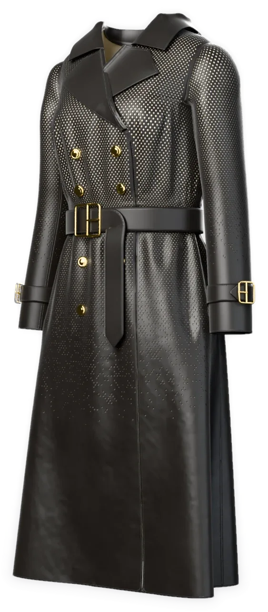
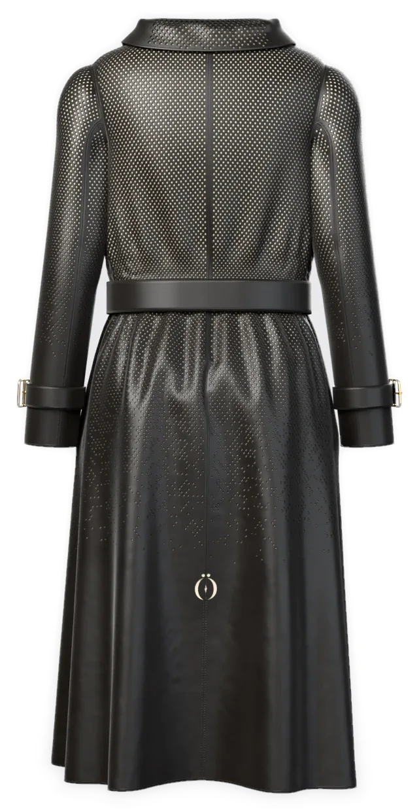
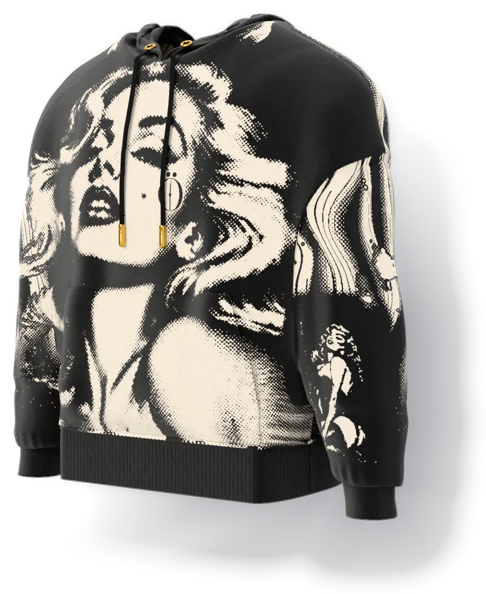
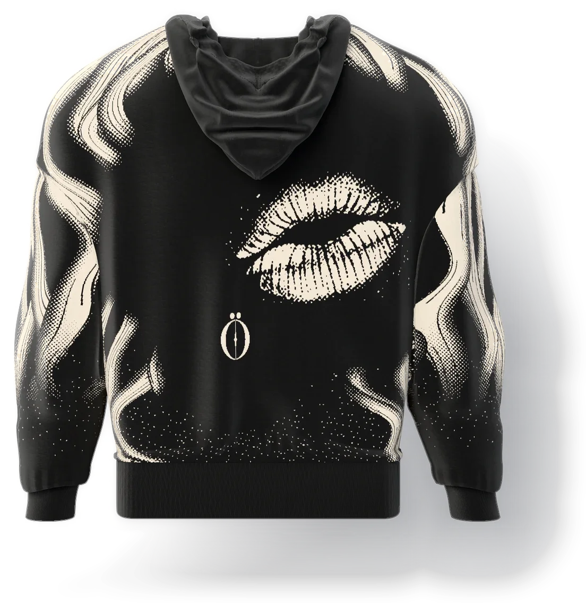
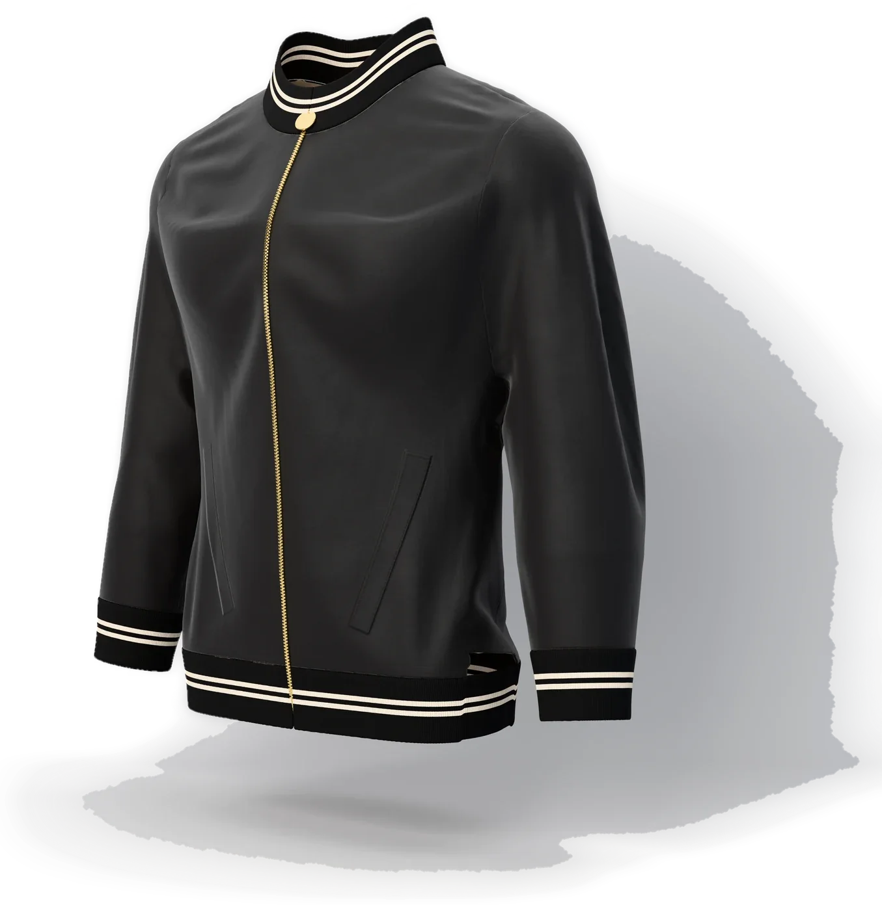
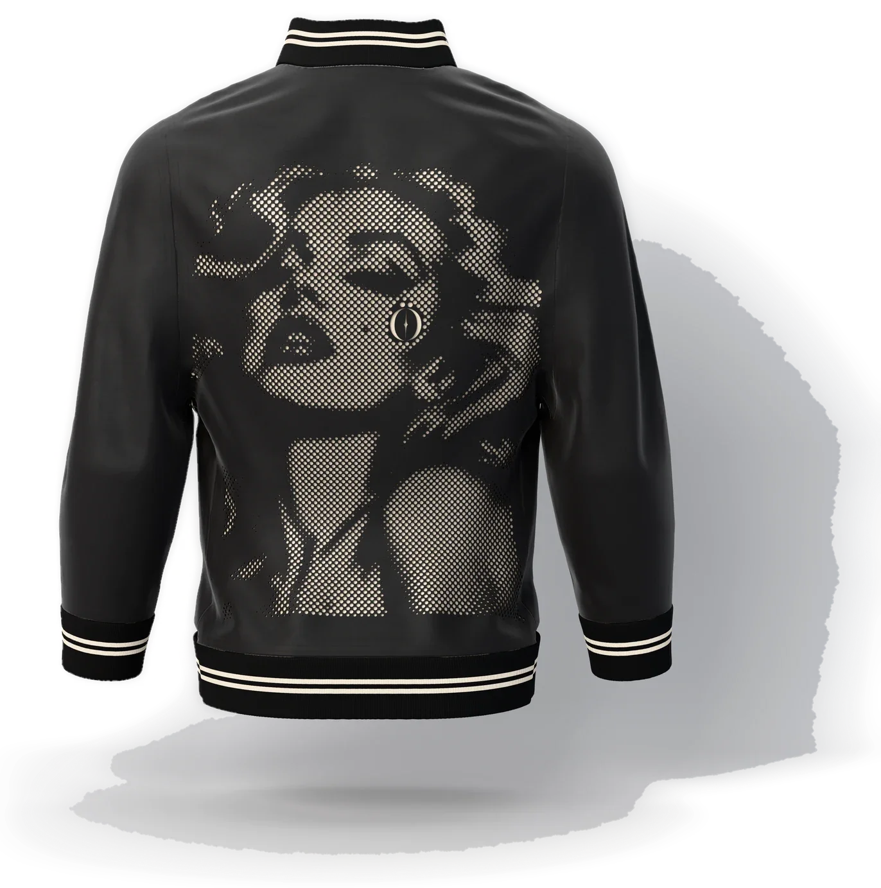
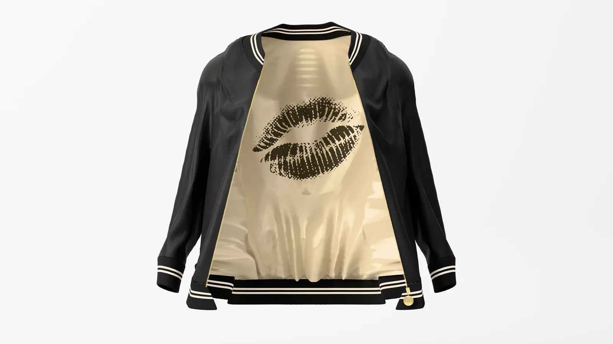
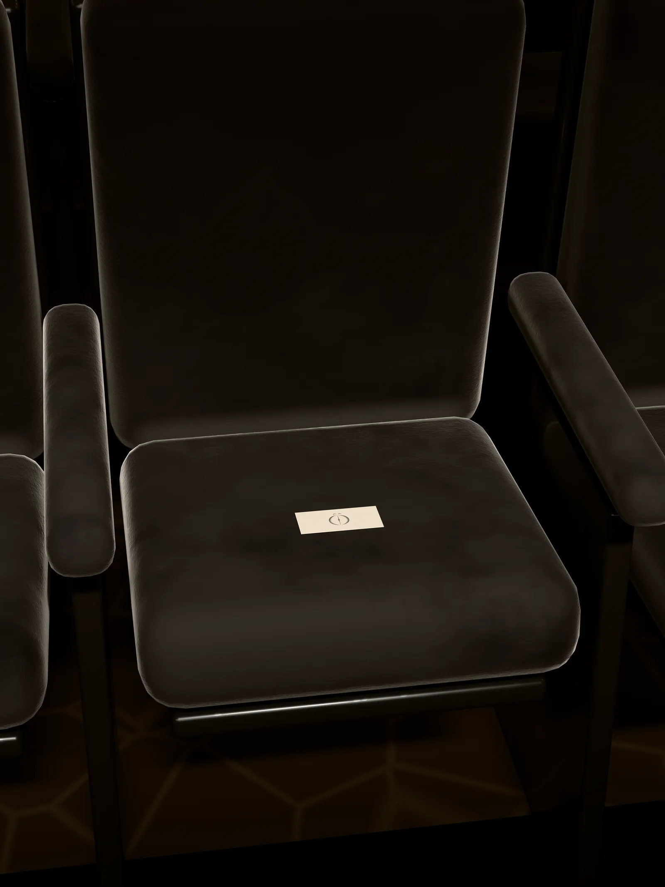

a seat is kept for you, before the first scene.
Chapter I
The room
 STAND-IN · img/gelosia/front/master.* (departments/apparel/new-pieces-2026-11/build/veil-coat/site/veil_coat_front_16k.png; 16K, 8640 × 15360)
STAND-IN · img/gelosia/front/master.* (departments/apparel/new-pieces-2026-11/build/veil-coat/site/veil_coat_front_16k.png; 16K, 8640 × 15360)
STAND-IN · img/gelosia/three-quarter/master.* (three-quarter view, 8K; 8K, 4320 × 7680)
STAND-IN · img/gelosia/back/master.* (back view, 8K; 8K, 4320 × 7680) STAND-IN · img/heliodora/front/master.* (departments/apparel/new-pieces-2026-11/build/muse-allover/site/muse_front_16k.png; 16K, 8640 × 15360)
STAND-IN · img/heliodora/front/master.* (departments/apparel/new-pieces-2026-11/build/muse-allover/site/muse_front_16k.png; 16K, 8640 × 15360)
STAND-IN · img/heliodora/three-quarter/master.* (three-quarter view, 8K; 8K, 4320 × 7680)
STAND-IN · img/heliodora/back/master.* (back view, 8K; 8K, 4320 × 7680) STAND-IN · img/odara/front/master.* (departments/apparel/new-pieces-2026-11/build/muse-bomber/site/muse_bomber_front_16k.png; 16K, 8640 × 15360)
STAND-IN · img/odara/front/master.* (departments/apparel/new-pieces-2026-11/build/muse-bomber/site/muse_bomber_front_16k.png; 16K, 8640 × 15360)
STAND-IN · img/odara/three-quarter/master.* (three-quarter view, 8K; 8K, 4320 × 7680)
STAND-IN · img/odara/back/master.* (back view, 8K; 8K, 4320 × 7680)
STAND-IN · img/odara/open/master.* (the open view, 8K, the lining and the kiss, after the satin pass (open8k, 19c6ef39, is a stand-in: its satin is being redone); 8K, 4320 × 7680)The line
fifteen pieces in black, cream and gold
STAND-IN · img/heliodora/front/master.* (departments/apparel/new-pieces-2026-11/build/muse-allover/site/muse_front_16k.png; 16K, 8640 × 15360)STAND-IN · img/odara/front/master.* (departments/apparel/new-pieces-2026-11/build/muse-bomber/site/muse_bomber_front_16k.png; 16K, 8640 × 15360)
 STAND-IN · img/ofusca/front/master.* (departments/apparel/new-pieces-2026-11/build/sunglasses/site/sunglasses_front_16k.png; 16K, 15360 × 8640)
STAND-IN · img/ofusca/front/master.* (departments/apparel/new-pieces-2026-11/build/sunglasses/site/sunglasses_front_16k.png; 16K, 15360 × 8640) STAND-IN · img/film/poster/master.* (clip 8: the row from behind and above, the kept seat on the left third; 8K, 7680 × 4320)
STAND-IN · img/film/poster/master.* (clip 8: the row from behind and above, the kept seat on the left third; 8K, 7680 × 4320)
STAND-IN · img/book/plate-v/master.* (the plate for V. The Kept Seat: Seat L2 from above the seat in front, close.; 8K, 5760 × 7680)The register